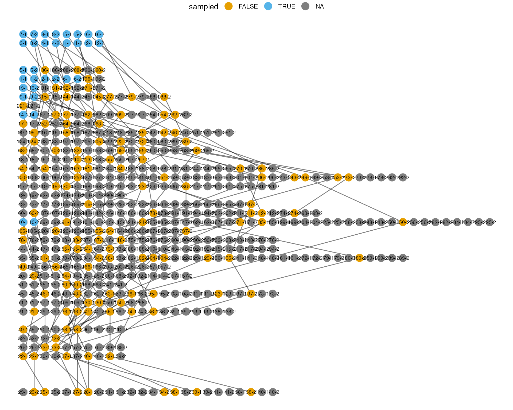

library(tekkamaki)
library(ggplot2)
grDevices::palette("Okabe-Ito")
options(
ggplot2.continuous.colour = "viridis",
ggplot2.continuous.fill = "viridis",
ggplot2.discrete.colour = grDevices::palette()[-1],
ggplot2.discrete.fill = grDevices::palette()[-1]
)Generate a gene genealogy
result = tekka("--seed 42 -y40 -K100 -r2 -l2 --sa 2,2 --sj 2,2")
samples = result$sample_family[[1L]]
segments = gather_segments(samples)
set.seed(666L)
genealogy = make_gene_genealogy(segments) |> print()## $V tibble [379 × 1] (S3: tbl_df/tbl/data.frame)
## $ name: chr [1:379] "43-2" "1-1" "17-2" "1-2" ...
## # A tibble: 362 × 5
## from to birth_year capture_year sampled
## <chr> <chr> <int> <int> <lgl>
## 1 43-2 1-1 34 39 TRUE
## 2 17-2 1-2 34 39 TRUE
## 3 67-2 2-1 34 39 TRUE
## 4 62-1 2-2 34 39 TRUE
## 5 87-1 3-1 39 39 TRUE
## 6 78-2 3-2 39 39 TRUE
## 7 107-2 4-1 39 39 TRUE
## 8 93-1 4-2 39 39 TRUE
## 9 80-1 5-1 36 40 TRUE
## 10 110-2 5-2 36 40 TRUE
## # ℹ 352 more rowsVisualize the generated gene genealogy
plot(genealogy) +
theme_void() +
theme(legend.position = "top")
Generate a SNP matrix
genealogy |> place_mutations(3L)## [,1] [,2] [,3]
## 1-1 0 0 0
## 1-2 1 0 0
## 2-1 0 1 1
## 2-2 0 0 0
## 3-1 0 0 0
## 3-2 0 0 0
## 4-1 0 0 0
## 4-2 0 0 0
## 5-1 0 0 1
## 5-2 0 0 0
## 6-1 0 0 0
## 6-2 0 0 0
## 7-1 0 0 0
## 7-2 0 0 0
## 8-1 0 0 1
## 8-2 0 0 1
## 9-1 0 0 0
## 9-2 0 0 0
## 10-1 0 0 0
## 10-2 1 0 0
## 11-1 0 0 0
## 11-2 0 0 0
## 12-1 0 0 0
## 12-2 0 0 0
## 13-1 0 0 0
## 13-2 0 0 0
## 14-1 0 0 1
## 14-2 0 0 0
## 15-1 0 0 0
## 15-2 0 0 0
## 16-1 0 0 0
## 16-2 0 0 0There is a shortcut to generate a SNP matrix from
sample_family:
## [,1] [,2] [,3]
## 1-1 0 0 0
## 1-2 0 0 0
## 2-1 0 0 0
## 2-2 0 0 0
## 3-1 0 0 0
## 3-2 0 0 0
## 4-1 0 0 0
## 4-2 0 0 0
## 5-1 0 0 0
## 5-2 0 0 0
## 6-1 0 0 0
## 6-2 0 0 0
## 7-1 0 0 0
## 7-2 1 1 0
## 8-1 0 0 0
## 8-2 0 0 0
## 9-1 0 0 0
## 9-2 0 0 0
## 10-1 0 0 0
## 10-2 0 0 0
## 11-1 0 0 0
## 11-2 0 0 0
## 12-1 0 0 0
## 12-2 0 1 0
## 13-1 0 0 0
## 13-2 0 0 0
## 14-1 0 0 0
## 14-2 0 0 1
## 15-1 0 0 0
## 15-2 0 0 0
## 16-1 0 0 0
## 16-2 0 0 0